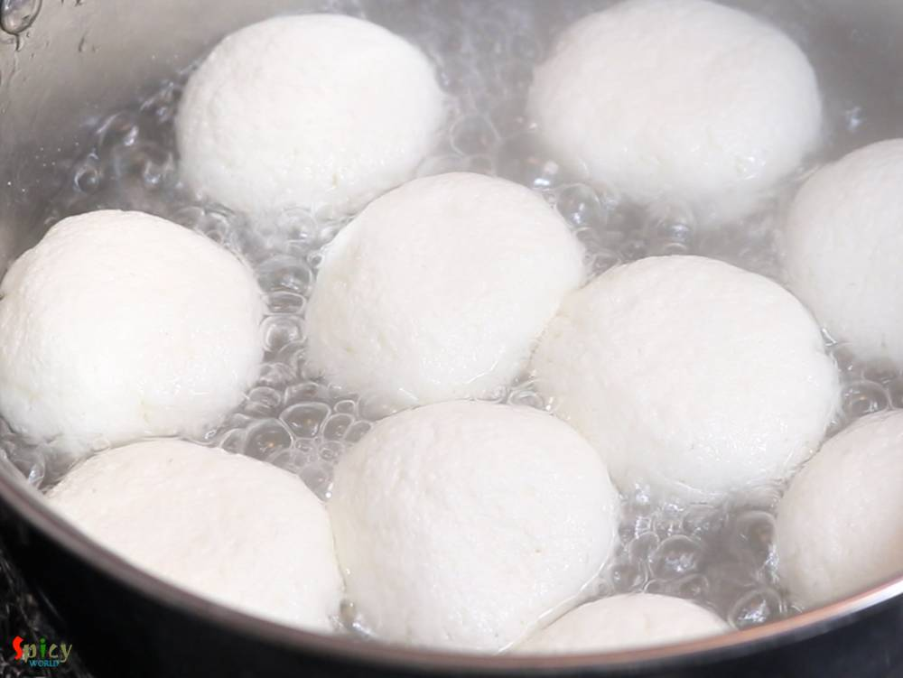
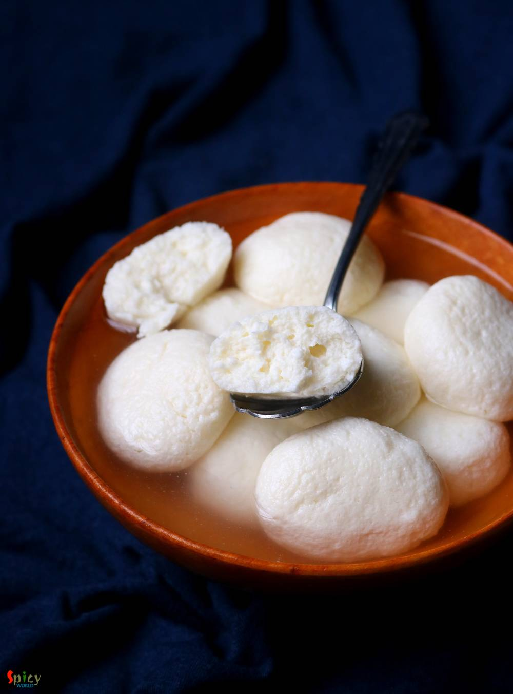

Simple and Easy Recipes
Bengali Sponge Rosogolla
© 2016 Spicy World, Published on: Feb 18, 2019
Rosogolla is cottage cheese balls cooked and soaked in suger syrup. Rosogolla is a Bengali delicacy. You will get so many flavors of them in Kolkata sweet shops, like Nolen gur / Rose / Mango / Strawberry / Paan / Cardamom and what not! But one of my favorite is Sponge Rosogolla which is plain and simple. They are literally light and soft like sponges! If you follow every tips of this recipe you will get the exact spongy Rasgulla. Being a Bengali it is my pleasure to share this recipe with you all. Do try in your kitchen and let me know how they turned out for you.

Ingredients
- 1.5 liters of full fat milk.
- 5-7 Tablespoons of yogurt or curd (you may need more).
- 6 cups of water.
- 2 cups of sugar.


Steps
Put the milk in a saucepan, then turn on the gas on medium flame and keep stirring.
When the milk starts bubbling, reduce the flame to low and add beaten yogurt. Yogurt will make the rasgullas soft. Turn off the flame and mix well.
After 1-2 minutes you will see the chena (paneer).
Immediately strain it in a strainer lined with a cotton cloth. Then wash it with cold water for few seconds. To get the spongy chena you have to do this 2 things quickly.
Squeeze the paneer with cloth gently 2-3 times with your hand, not more than that. Then hang it with kitchen tap for only 30 minutes. Do not make the paneer very dry.
In the meantime, mix 6 cups of water and 2 cups of sugar in a big, open vessel. Keep the vessel on medium flame and stir until sugar melts.
After 30 minutes take out the chena in a plate or flat surface.
First crumble the paneer gently with your hand, then lightly mash it with your fingers for 1-1.5 minutes.
Do not mash it hard, otherwise roshogolla will become hard. You don't have to make the paneer very smooth.
Now make medium size balls out of it. You will get 12-15 roshogolla.
Drop the balls in sugar syrup while it is bubbling. For the sponge rasgulla you will need thin syrup.
Cover the pan, cook on high heat for 10 minutes.
Then reduce the heat to medium, flip them gently with spatula and again cook for 15 minutes.
Turn off the heat and let them cool down completely. Rasgulla will shrink a bit when they will become cold.
Your sponge rosogolla is ready to serve.
Serve them chilled ...
")